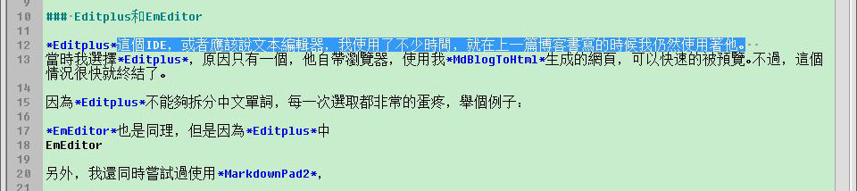
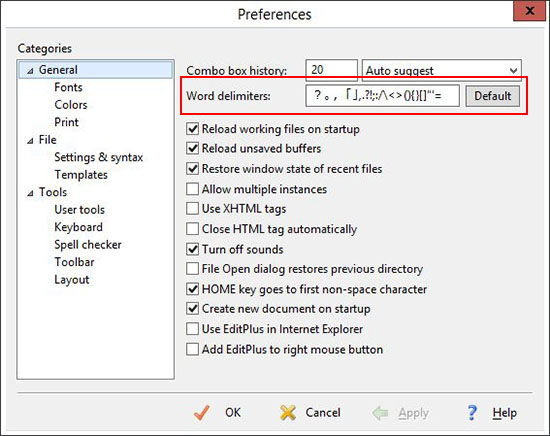
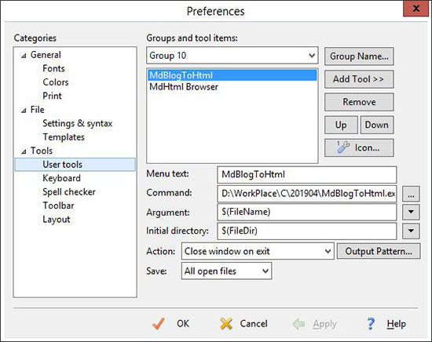
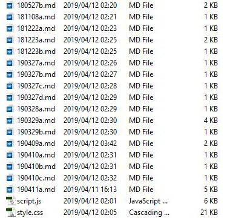

大家好，這篇文章我會介紹一下我編寫博客的具體方式。
可以配合上一篇網誌談談我是怎麼寫博客的食用。那麼，本文與上一篇網誌有何不同呢？這篇文章會偏向技術。我會介紹我的博客環境具體是個甚麼樣子的以及是如何配置的。
よし、さっそく見に行きましょう。
首先是我的IDE。
Editplus這個IDE，或者應該說文本編輯器，我使用了不少時間，就在上一篇博客書寫的時候我仍然使用著他。
當時我選擇Editplus，原因只有一個，他自帶瀏覽器，使用MdBlogToHtml生成的網頁，可以快速的被預覽。不過，這個情況很快就終結了。
因為Editplus不能夠拆分中文單詞，每一次選取都非常的蛋疼，舉個例子：

這個是在Editplus按兩次左鍵後的結果，看到了嗎？他把， 。都當成一般的文本進行斷詞了。就算在Word delimiters中添加了對應的字元，仍然無解。

另外，我還嘗試過MarkdownPad2以及CuteMarkEd，雖然他們都帶有即時預覽機能，但他們對utf-16編碼的支援不是很友好。而CuteMarkEd甚至只支援utf-8格式的編碼。同時，MarkdownPad2在生成的HTML文檔中會強制加入自己的簽名，這讓我很反感。
所以，我開始使用了EmEditor。
基本上像Editplus這樣的文本編輯器都會允許運行腳本，也因為這個原因我喜歡把它們稱作IDE。
而我博客生成HTML文檔的程序MdBlogToHtml自然是支持命令行啟動，其實也只支持命令行啟動。
google一下how to configure gcc in EditPlus就能得到如果添加擴展的解決方法了，依葫蘆畫瓢就可以配置好博客轉HTML的環境了。

這個是我在Editplus的配置，快速鍵是Ctrl+1。EmEditor也按照相同的方式將MdBlogToHtml植入就可以了。
我在編寫博客時同時會打開瀏覽器進行預覽新生成的葉面。之後，每一次編寫博客想要查看效果的時候，只需要按下Ctrl+1生成HTML格式，然後刷新瀏覽器就行了。
因為博客文章編寫的時候使用的是類Markdown語法，所以格式基本採用Markdown的編排格式。
而文章內容主要分為三類，散文，技術問題解決方法，代碼心得。
散文主要以隨筆為主，記錄下甚麼心情，甚麼事情。比如這篇文章。而更短文章，與其說是散文不如說是推特裡的推文，這樣的文章會放在post.html中。
散文的排版格式：
#[[這裡寫大標題]]
>[[這裡寫引言]]
[[這裡寫正文，因為是網誌，隨便扯]]
###[[這裡是子標題]]
####[[如果還需要子標題的話]]
<FOOTER>frankrx41.github.io 2019</FOOTER>
技術問題解決方法是給以後的自己看的，告訴以後的自己曾經的自己是怎麼度過的難關。這裡保持簡潔，不要廢話。問題描述要清楚，先將如何解決寫出來，再寫上解決的過程。問題的發生原因，解決原因能寫就寫，忘了那就留空。
#[[簡單清晰的描述問題]]
[[清楚描述問題發生的條件，在該條件下可以再現該問題]]
[[描述問題的解決方法]]
[[描述問題發生的原因，以及為甚麼使用該方法可以解決，同時可以提及到一些類似的問題]]
備考：
- <[[這裡寫參考的文章的網址，比如下面]]>
- <http://google.com>
<FOOTER>frankrx41.github.io 2019</FOOTER>
每一個問題開一個專欄，類似的問題可以合併。
最後的代碼心得也就是我研究這些年來，想要和世界分享的事物了。比如解除南郵教務管理系統中禁止使用TAB的限制這樣的文章，還有像C語言實現列印出二進數格式這樣的教程。
這類博客排版與散文相同，但是因為偏向於技術，所以其中會有很多的<PRE> <CODE>標籤。
`[[這裡寫代碼片段]]`
[[這裡貼代碼塊]]
此外，博客中還會使用到<TABLE>，<KBD>等Markdown中支援不是很友好的標籤，這類標籤直接按照HTML的標準編寫就行了。不過，所有的標籤我使用的是大寫字母。註釋也直接使用HTML的註釋就行了<!-- -->。
還有其他一些標誌，比如對話：
- *こんにちは*
- *你能不能好好說人話？*
這樣的代碼被編譯後會顯示為：
>標記除了會用來做引言，還會被用來引用對話框中的內容，比如：
>当前<评教师>中有教师的评分全部相同，请重新评价！
而post.md中的格式也很簡：
####[[YYYY-MM-DD]]
[[心裡想說的話，想在朋友圈裡發的話]]
<FOOTER>frankrx41.github.io 2019</FOOTER>
還有更新日誌updatelog.md：
#博客更新日誌
##[[YYYY-MM-DD]]
- [[我進行了甚麼修改]]
- [[非常想讓大家查看知道的文章也會在這裡添加一個LINK]]
<FOOTER>frankrx41.github.io 2019</FOOTER>
那麼，最後就是index.md的格式了。
index.md是我每一次編寫博客都必須，不得不更新的文檔。否則就沒有LINK所指向我更新的文章。
index.md是主站，是每個人訪問我網站的入口。所以，我盡量整得美觀些。
#frankrx41の公開博客
最後更新日期： [[YYYY-MM-DD]]
[[這裡可以寫一些留言]]
##[[分類標題]]
[#](YYMMDDa.html) [[YYYY-MM-DD]] [[文章標題，比如下面那樣]]
[#](190412a.html) 2019-04-12 介紹一下我的博客編寫環境
###<STRONG>本博客中的文章，圖片均**轉載禁止**</STRONG>
<P style="font-size:12px">友情链接[友情連結標題](https://example.com/)</P>
<FOOTER>frankrx41.github.io 2019</FOOTER>
每一次寫了新文章後，在對應的分類中增加指向新文章的LINK即可。當然，還要改變最後更新日期中的日期，讓大家知道本次有多少瀏覽本網站的價值。
對於散文一類的文章，我會在文章標題前加入編寫時間，而對於技術性的文章我則不會。
如果我牛點逼，也想把主頁整得花稍些，只是可惜了自己的才能。總之，就先這樣。
我的博客主要分為兩個檔案夾，D:\WorkPlace\Blog下保存本地文檔，這些文檔包括所有Markdown格式的博客底稿，被編輯之前的原始圖片，還有一些參考的文章。
這裡的文本文檔全部會用(UTF-16 LE with bom)格式存儲，檔案名均為當前日期+小寫字母序號。Markdown文檔擴展名為.md，生成的HTML文檔擴展名為.html，全部使用小寫字母。
另一個檔案夾D:\Program Files\Git\blog就是負責和的網絡博客之間通信的地方了。這裡面不會有生成的臨時文件，裡面的文檔和網路上我的博客https://frankrx41.github.io中文檔完全一模一樣。
這兩個檔案夾中，2017，2018，2019檔案夾下保存該年分使用的多媒體文檔。這兩個檔案夾下的這幾個多媒體文件夾是使用mklink指令綁定的檔案夾。畢竟多媒體檔案很佔硬盤。同樣，所有多媒體文檔以小寫命名。
博客使用的javascript文檔和css文檔直接保存在根路徑下。
css和js編寫css主要用Dreamweaver，而javascript我還沒有特別鍾情的編寫工具，被迫使用Dreamweaver編寫，使用Chrome的控制台進行偵錯。

博客裡面的一些圖片，當以自己電腦屏幕為素材時，我使用的截圖工具是IrfanView。編輯工具用的是photoshop。
每博客中的圖片為了保持美觀，比較窄的圖片會把寬度控制在550px。在本博客JS控制的CSS的樣式下，這樣圖片會浮動在網頁中並只佔據一半的寬度。否則圖片會佔據100%的寬度。
所以，剛剛的圖片應該只會佔據一半的屏幕寬度。
因為我的javascript中提供了點圖片縮放的機能，所以也不需要擔心圖片顯示太小，看不清裡面的文字。
另外要注意，在編寫插入圖片語句時，圖片的擴展名要使用小寫的jpg。
我的CSS樣式可以從這裡下載，雖然註釋還沒有刪乾淨。
博客我會先在本地下進行編寫，然後本地編譯，檢查錯誤。當沒有特別明顯的問題後，將生成的HTML文檔扔到與網絡交互的檔案夾裡，之後，執行上一篇博客所說的，部屬。
另外，因為我對日語情有獨鍾，所以可能會在博客裡時不時秀上幾句。還望見笑。
最後，給說給想要像我一樣自己手寫博客的朋友，那個博客轉HTML工具MdBlogToHtml，等把Bugs基本改完以及把註釋裡面那些奇奇怪怪的內容刪除掉之後，後我會開源的。